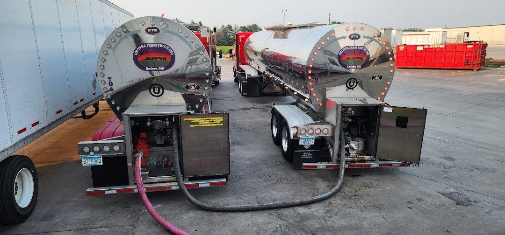
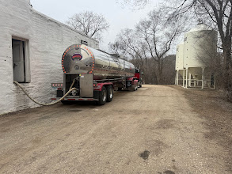
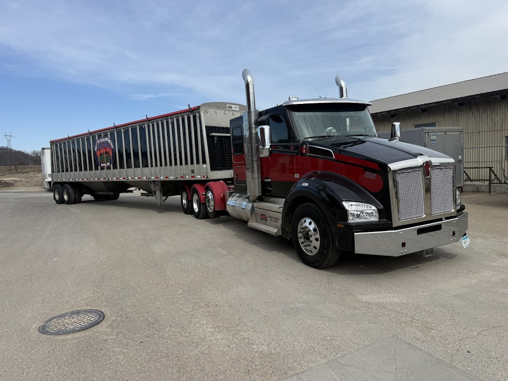

Specialized equipment for bulk freight work.
Each trailer type serves a specific purpose in our operation. Drivers who come here work with equipment that is well-maintained, professionally marked, and ready for the job.

Food-Grade & Feed-Grade Tankers
Our tanker fleet handles both food-grade and feed-grade liquid and dry bulk products. Drivers working these trailers are trained on proper procedures for product safety, cleaning protocols, and delivery site expectations.

Bulk Belt Trailer Operation
Belt trailers are used for bulk commodity unloading at grain elevators, feed mills, and other agricultural facilities. This is specialized work that requires attention to detail and consistent operating procedures at every stop.

Dry Bulk Hopper Work
Hopper trailers are a core part of our dry bulk freight capacity. We use them across a range of agricultural and industrial commodities, with an emphasis on clean equipment and dependable performance at customer facilities.

Late-Model Trucks
Our trucks are spec'd for driver comfort and operational reliability. We believe well-maintained, modern equipment reflects the professionalism we expect from every member of the team and every mile we put on the road.